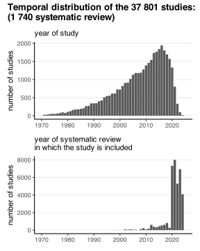
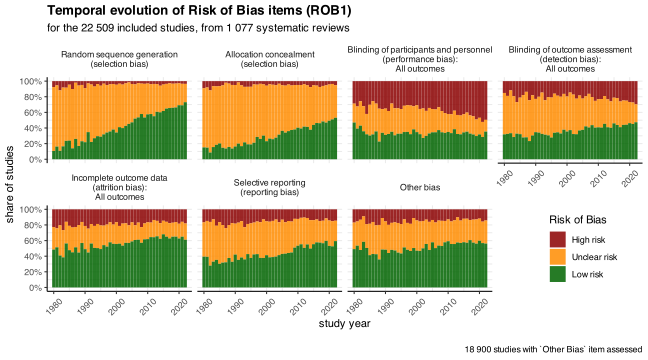
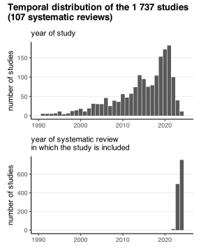
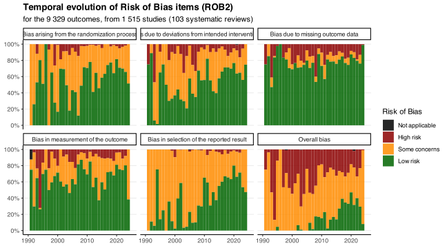

Code
knitr::opts_chunk$set(warning=F, message=F, results=F, fig.align = "center", dev='svg')
# Load the function file
source("functions.R")
library(patchwork)
library(scales)Load data
Add year of systematic review
risk_of_bias1 <- risk_of_bias1 %>%
# turn NA judgements into a level, & factor-order them
mutate(
judgement = replace_na(judgement, "Not assessed"),
judgement = factor(
judgement,
levels = c("Low risk", "Unclear risk", "High risk", "Not assessed")
)
) %>%
# join on the SR publication date, then extract year
left_join(
versions %>% select(cochrane_IDs, Published),
by = "cochrane_IDs"
) %>%
mutate(
published_year = year(ymd(Published))
)
# compute total number of *unique* studies
nb_studies <- risk_of_bias1 %>%
distinct(cochrane_IDs, Study_ID) %>%
nrow()# ──────────────────────────────────────────────────────────────────────────────
# helper: three-way frequency plot
# ──────────────────────────────────────────────────────────────────────────────
not_reported_legend <- "Not reported\n\nROB1 item:\nnot present for the study\n\n\n"
reported_not_assessed_legend <- "Reported & not assessed\n\nROB1 item:\npresent for the study\n\nROB1 judgement:\n'not assessed'"
reported_assessed_legend <- "Reported & assessed\n\nROB1 item:\npresent for the study\n\nROB1 judgement:\n'high', 'unclear' or 'low'"
plot_freq_3cat <- function(df, min_pct = 10) {
# Denominator: total review-study rows
total_rows <- df %>% distinct(cochrane_IDs, Study_ID) %>% nrow()
# 1) rows where the item is present
present <- df %>%
distinct(cochrane_IDs, Study_ID, ROB1_item, judgement)
sum_tbl <- present %>%
mutate(
cat = ifelse(judgement == "Not assessed",
reported_not_assessed_legend,
reported_assessed_legend)
) %>%
count(ROB1_item, cat, name = "n_cat") %>%
# 2) add the "Not reported" count for each item
complete(
ROB1_item,
cat = c(reported_assessed_legend,
reported_not_assessed_legend,
not_reported_legend),
fill = list(n_cat = 0)
) %>%
group_by(ROB1_item) %>%
mutate(
n_cat = ifelse(cat == not_reported_legend,
total_rows - sum(n_cat), # fill missing
n_cat)
) %>%
ungroup() %>%
# 3) convert to % and filter by threshold (≥ min_pct on *reported* share)
group_by(ROB1_item) %>%
mutate(
pct_cat = 100 * n_cat / total_rows,
pct_any = 100 * sum(n_cat[cat != not_reported_legend]) / total_rows
) %>%
ungroup() %>%
filter(pct_any >= min_pct)
# keep only the items that survived the threshold, in descending order
item_levels <- sum_tbl %>%
distinct(ROB1_item, pct_any) %>%
arrange(pct_any) %>%
pull(ROB1_item)
sum_tbl <- sum_tbl %>%
mutate(
ROB1_item = factor(ROB1_item, levels = item_levels),
cat = factor(cat, levels = c(not_reported_legend,
reported_not_assessed_legend,
reported_assessed_legend))
)
ggplot(sum_tbl, aes(x = pct_cat,
y = ROB1_item,
fill = cat)) +
geom_col(alpha=.85) +
scale_x_continuous(
labels = percent_format(scale = 1),,
breaks = seq(0, 100, 20),
expand = c(0,1)
) +
labs(
x = "share of studies", title = "Reporting of Risk of Bias 1 items\n",
y = NULL, fill=NULL, subtitle = "ROB1 item:"
) +
theme(
legend.position = "bottom",
panel.grid.major.y = element_blank(),
panel.grid.major.x = element_line(),
panel.grid.minor.x = element_line()
)
}gg1 <- ggplot(
risk_of_bias1 %>% distinct(cochrane_IDs, Study_ID, Year)
) +
geom_bar(aes(Year)) +
xlim(1970, 2025) +
labs(
y="number of studies", x=NULL,
subtitle = "year of study"
) +
ggplot(
risk_of_bias1 %>% distinct(cochrane_IDs, Study_ID, published_year)
) +
geom_bar(aes(published_year)) +
xlim(1970, 2025) +
labs(
y="number of studies", x=NULL,
subtitle ="year of systematic review\nin which the study is included"
) +
plot_layout(ncol = 1) +
plot_annotation(
title = paste0(
"Temporal distribution of the ", number(nb_studies), " studies:\n(",
number(length(unique(risk_of_bias1$cochrane_IDs))), " systematic review)")
)
gg1
selected_items_ROB1 <- c(
# 1.Selection Bias: Sequence generation and Allocation concealment
"Random sequence generation (selection bias)",
"Allocation concealment (selection bias)",
# 2.Performance bias
"Blinding of participants and personnel (performance bias): All outcomes",
#"Blinding of participants and personnel (performance bias)",
# 3.Detection bias
"Blinding of outcome assessment (detection bias): All outcomes",
#"Blinding of outcome assessment (detection bias)",
# 2 and 3 together
#"Blinding (performance bias and detection bias): All outcomes",
#"Blinding (performance bias and detection bias)",
# 4.Attrition bias
"Incomplete outcome data (attrition bias): All outcomes",
# 5.Reporting bias
"Selective reporting (reporting bias)",
# 6.Other bias
"Other bias"
)f_expand_items_to_plot <- function(df, rob_items){
# 1) get one row per study
all_studies <- df %>%
distinct(cochrane_IDs, Study_ID, Year)
# 2) define your desired order and strip‐labels
item_levels <- rob_items
strip_labels <- str_replace(rob_items, " \\(", "\n(")
strip_labels <- str_replace(strip_labels, " All outcomes", "\nAll outcomes")
# 3) build the complete study × item grid,
# *and* set ROB1_item as an ordered factor
plot_df <- expand_grid(
all_studies,
ROB1_item = rob_items
) %>%
mutate(
ROB1_item = factor(ROB1_item, levels = item_levels)
) %>%
# 4) bring in judgements
left_join(
df %>%
filter(ROB1_item %in% rob_items) %>%
distinct(cochrane_IDs, Study_ID, ROB1_item, judgement),
by = c("cochrane_IDs", "Study_ID", "ROB1_item")
) %>%
# 5) fill NAs, order judgement, and make strip_label factor
mutate(
judgement = replace_na(judgement, "Not assessed"),
judgement = factor(
judgement,
levels = c("Not assessed", "High risk", "Unclear risk", "Low risk")
),
strip_label = factor(
ROB1_item,
levels = item_levels,
labels = strip_labels
)
)
return(plot_df)
}
plot_rob1_items <- function(plot_df, year_min, year_max) {
plot_df %>%
filter(Year>=year_min, Year<=year_max) %>%
# 6) plot with a classic theme + no panel/frame borders
ggplot(aes(x = Year, fill = judgement)) +
geom_bar(position = "fill", alpha = .85, width=1) +
scale_y_continuous(labels = percent, breaks = seq(0, 1, .2)) +
facet_wrap(vars(strip_label), nrow = 2) +
coord_cartesian(xlim=c(year_min, year_max), ylim = c(0, 1)) +
labs(
x = "study year", y = "share of studies",
title = paste0("Temporal evolution of Risk of Bias items (ROB1)"),
subtitle = paste0(
"for the ",
number(plot_df %>% distinct(cochrane_IDs, Study_ID) %>% nrow()),
" included studies, from ",
number(plot_df %>% distinct(cochrane_IDs) %>% nrow()),
" systematic reviews"
)
) +
theme(
legend.position = c(.9, .2),
strip.background = element_blank(),
panel.grid.major.x = element_line(),
panel.grid.major.y = element_line(),
panel.grid.minor.y = element_line(),
panel.grid.minor.x = element_line(),
axis.text.x = element_text(angle = 45, vjust=.5)
)
}all_assessed_with_other_bias <- f_expand_items_to_plot(risk_of_bias1, selected_items_ROB1) %>%
#filter(ROB1_item %in% selected_items_ROB1) %>%
group_by(cochrane_IDs, Study_ID) %>%
# keep only those groups in which *every* judgement is non-NA
filter(all(judgement != "Not assessed")) %>%
ungroup()
all_assessed_without_other_bias <- f_expand_items_to_plot(risk_of_bias1, setdiff(selected_items_ROB1, "Other bias")) %>%
#filter(ROB1_item %in% selected_items_ROB1) %>%
group_by(cochrane_IDs, Study_ID) %>%
# keep only those groups in which *every* judgement is non-NA
filter(all(judgement != "Not assessed")) %>%
ungroup()
temp <- bind_rows(
all_assessed_with_other_bias,
all_assessed_without_other_bias
) %>%
distinct()
plot_rob1_items(temp, 1980, 2022) +
scale_fill_manual(
values = c(
"Low risk" = "darkgreen",
"Unclear risk" = "darkorange",
"High risk" = "darkred"
),
name = "Risk of Bias",
drop= F
) +
labs(
caption = paste0(
"\n",
number(all_assessed_with_other_bias %>% distinct(cochrane_IDs, Study_ID) %>% nrow()),
" studies with `Other Bias` item assessed"
)
)
risk_of_bias2 <- read_csv("output_data/MA_extracted_data/risk_of_bias/risk_of_bias2.csv")
problems(risk_of_bias2)
glimpse(risk_of_bias2)
# number of SR
length(unique(risk_of_bias2$cochrane_IDs))
# number of studies
length(unique(risk_of_bias2$Study_ID))
# number of MAs (main or subgroup)
risk_of_bias2 %>%
distinct(cochrane_IDs, `Analysis group number`, `Analysis number`, `Subgroup number`) %>%
nrow()risk_of_bias2_gathered <- risk_of_bias2 %>%
select(
cochrane_IDs, `Analysis group number`, `Analysis number`, `Subgroup number`,
Study_ID, Study, Year,
`Bias arising from the randomization process (judgement)`,
`Bias due to deviations from intended interventions (judgement)`,
`Bias due to missing outcome data (judgement)`,
`Bias in measurement of the outcome (judgement)`,
`Bias in selection of the reported result (judgement)`,
`Overall bias (judgement)`
) %>%
gather(
ROB2_item, judgement,
`Bias arising from the randomization process (judgement)`,
`Bias due to deviations from intended interventions (judgement)`,
`Bias due to missing outcome data (judgement)`,
`Bias in measurement of the outcome (judgement)`,
`Bias in selection of the reported result (judgement)`,
`Overall bias (judgement)`
)
risk_of_bias2_gathered <- risk_of_bias2_gathered %>%
# turn NA judgements into a level, & factor-order them
mutate(
judgement = replace_na(judgement, "Not assessed"),
judgement = factor(
judgement,
levels = c("Not assessed", "Not applicable", "High risk", "Some concerns", "Low risk")
)
) %>%
# join on the SR publication date, then extract year
left_join(
versions %>% select(cochrane_IDs, Published),
by = "cochrane_IDs"
) %>%
mutate(
published_year = year(ymd(Published))
)
glimpse(risk_of_bias2_gathered)
# remove the "(judgement)" from ROB2 items names
risk_of_bias2_gathered <- risk_of_bias2_gathered %>%
mutate(ROB2_item = str_replace(ROB2_item, " \\(judgement\\)", ""))
# order ROB2 items
risk_of_bias2_gathered$ROB2_item <- factor(
risk_of_bias2_gathered$ROB2_item,
levels = c(
"Bias arising from the randomization process",
"Bias due to deviations from intended interventions",
"Bias due to missing outcome data",
"Bias in measurement of the outcome",
"Bias in selection of the reported result",
"Overall bias"
)
)# compute total number of *unique* studies
nb_studies <- risk_of_bias2_gathered %>%
distinct(cochrane_IDs, Study_ID) %>%
nrow()
# number of studies through time
risk_of_bias2_gathered %>%
distinct(cochrane_IDs, Study_ID, Year) %>%
ggplot() +
geom_bar(aes(Year)) +
labs(subtitle = "year of study", y="number of studies", x=NULL) +
xlim(1990, 2025) +
risk_of_bias2_gathered %>%
distinct(cochrane_IDs, Study_ID, published_year) %>%
ggplot() +
geom_bar(aes(published_year)) +
xlim(1990, 2025) +
labs(subtitle = "year of systematic review\nin which the study is included", y="number of studies", x=NULL) +
plot_layout(ncol = 1) +
plot_annotation(
title = paste0(
"Temporal distribution of the ",
number(nb_studies), " studies\n(",
number(risk_of_bias2 %>% distinct(cochrane_IDs) %>% nrow()), " systematic reviews)"
)
)
There are much less included studies for ROB2, so the results are much nosier, but we can still see an imprving trend through time.
f_plot_rob2_temporal <- function(df, year_min, year_max){
ggplot(df) +
geom_bar(
aes(
Year, fill=judgement
),
position = "fill", width = 1, alpha=.85
) +
scale_y_continuous(
labels=scales::percent,
breaks = seq(0, 1, .2)
) +
facet_wrap(vars(ROB2_item)) +
xlim(year_min, year_max) +
labs(
y=NULL, x=NULL,
title = "Temporal evolution of Risk of Bias items (ROB2)",
subtitle = paste0(
"for the ",
number(
df %>%
distinct(cochrane_IDs, `Analysis group number`, `Analysis number`, `Subgroup number`, Study_ID) %>%
nrow()
),
" outcomes, from ",
number(df %>% distinct(cochrane_IDs, Study_ID) %>% nrow()),
" studies (",
number(df %>% distinct(cochrane_IDs) %>% nrow()),
" systematic reviews)"
)
)
}all_assessed_with_overall_bias <- risk_of_bias2_gathered %>%
group_by(cochrane_IDs, `Analysis group number`, `Analysis number`, `Subgroup number`, Study_ID) %>%
filter(all(judgement != "Not assessed")) %>%
ungroup()
nrow(all_assessed_with_overall_bias)
all_assessed_without_overall_bias <- risk_of_bias2_gathered %>%
filter(judgement != "Overall bias") %>%
group_by(cochrane_IDs, `Analysis group number`, `Analysis number`, `Subgroup number`, Study_ID) %>%
filter(all(judgement != "Not assessed")) %>%
ungroup()
nrow(all_assessed_without_overall_bias)
temp <- bind_rows(
all_assessed_with_overall_bias,
all_assessed_without_overall_bias
) %>%
distinct()
f_plot_rob2_temporal(temp, 1990, 2025) +
scale_fill_manual(
values = c(
"Low risk" = "darkgreen",
"Some concerns" = "darkorange",
"High risk" = "darkred",
"Not applicable"= "black"
),
name = "Risk of Bias",
drop= F
)
risk_of_bias2_probable <- read_csv("output_data/MA_extracted_data/risk_of_bias/risk_of_bias2_probable.csv")
glimpse(risk_of_bias2_probable)
# number of SR
length(unique(risk_of_bias2_probable$cochrane_IDs))
# number of studies
(nb_studies <- risk_of_bias2_probable %>%
distinct(cochrane_IDs, Study_ID) %>%
nrow()
)
temp <- risk_of_bias2_probable %>%
distinct(cochrane_IDs, Study_ID, ROB1_item) %>%
group_by(ROB1_item) %>%
summarise(count = n(), pct = count/nb_studies) %>%
arrange(-count)# # add unique SR ID
# risk_of_bias1 <- risk_of_bias1 %>%
# mutate(
# SR_ID = sub("\\.pub[0-9]+$", "", cochrane_IDs)
# )
#
# # 2 assessments in 2 different SRs (2 versions in 1 SR does not count)
# duplicated_studies_rob1 <- risk_of_bias1 %>%
# select(SR_ID, Study_ID) %>%
# distinct() %>%
# group_by(Study_ID) %>%
# mutate(count = n()) %>%
# filter(count==2)
# cat(
# duplicated_studies_rob1 %>% distinct(Study_ID) %>% nrow(),
# "studies that might have been assessed excatly 2 times, in 2 different SR"
# )
#
# duplicated_rob1_judgements <- risk_of_bias1 %>%
# semi_join(duplicated_studies_rob1 %>% select(-count)) %>%
# filter(ROB1_item %in% setdiff(selected_items_ROB1, "Other bias")) %>%
# group_by(Study_ID) %>%
# mutate(ID = dense_rank(cochrane_IDs))
# ggplot(duplicated_rob1_judgements) + geom_histogram(aes(ID))
#
# duplicated_rob1_judgements <- duplicated_rob1_judgements %>%
# filter(ID %in% c(1, 2))
#
# unique(duplicated_rob1_judgements$judgement)
# unique(duplicated_rob1_judgements$ROB1_item)
#
# # 1. Summarise to counts (and optionally proportions)
# df_plot <- duplicated_rob1_judgements %>%
# group_by(ID, ROB1_item, judgement) %>%
# summarise(n = n(), .groups = "drop") %>%
# group_by(ID, ROB1_item) %>%
# mutate(pct = n / sum(n) * 100)
#
# # 2a. Bar chart of raw counts
# ggplot(df_plot, aes(x = factor(ID), y = n, fill = judgement)) +
# geom_col(position = "fill") +
# facet_wrap(~ ROB1_item, scales = "free_y") +
# labs(
# x = "study",
# y = "Count of items",
# fill = "judgement",
# title = "Risk-of-bias judgements: ID 1 vs ID 2"
# ) +
# theme_bw() +
# scale_y_continuous(
# labels = percent,
# breaks = seq(0, 1, .2)
# ) +
# theme(
# axis.text.x = element_text(angle = 45, hjust = 1),
# strip.text = element_text(face = "bold")
# )